Discovery & Target
The Target User
Meet Kristin and Keith. They represent the volunteer coaches who are managing lineups and trying to ensure they adhere to league rules. These coaches have their hands full trying to balance their full time jobs and the duties of coaching. They are busy teaching the kids the game, and often can be unaware on game days that they aren't adhering to the playing time rules for their league or simply miss things during all the chaos.
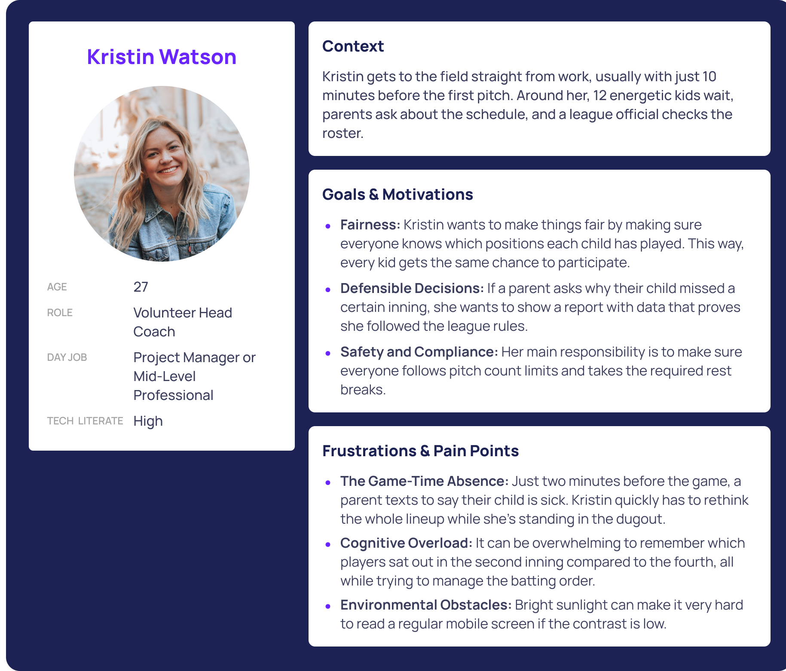
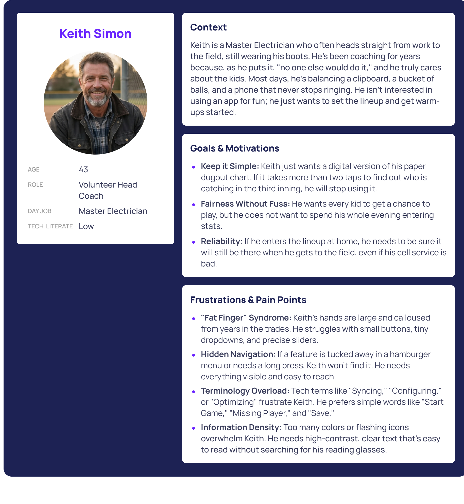
Validation Roadmap
Again, this is a quick, first iteration of an idea that I have to solve a real-world problem, one that I personally experienced, I have not done any research yet. This would be my high-level plan when I do.
5+ Inquiries
Interview coaches and have moderated feedback sessions where the coaches are hands-on with the proposed solution.
Surveys
Quantifying rule variations across different regions.
League Rules Audit
Identify initial markets/leagues and verify that constraint logic meets all targeted requirements.
Establishing Logic
Constraint Based Logic
I saw league rules as part of the logic behind the game, not just a list of settings. Setting up system constraints early helped me avoid problems later and stopped illegal rotations before they could occur
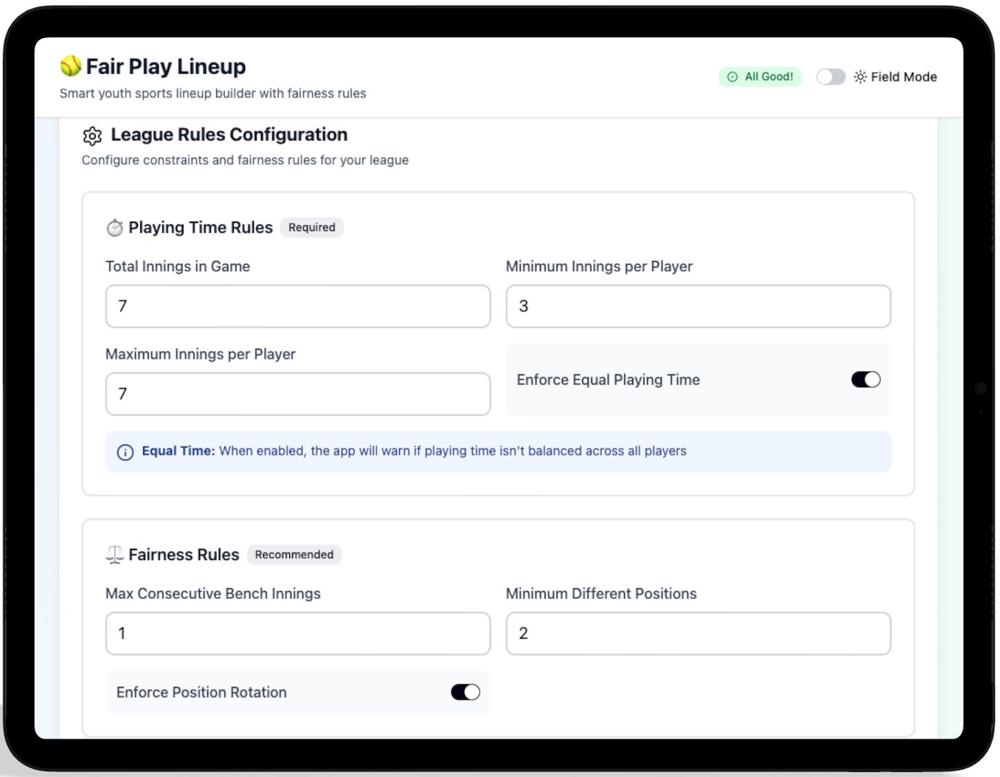
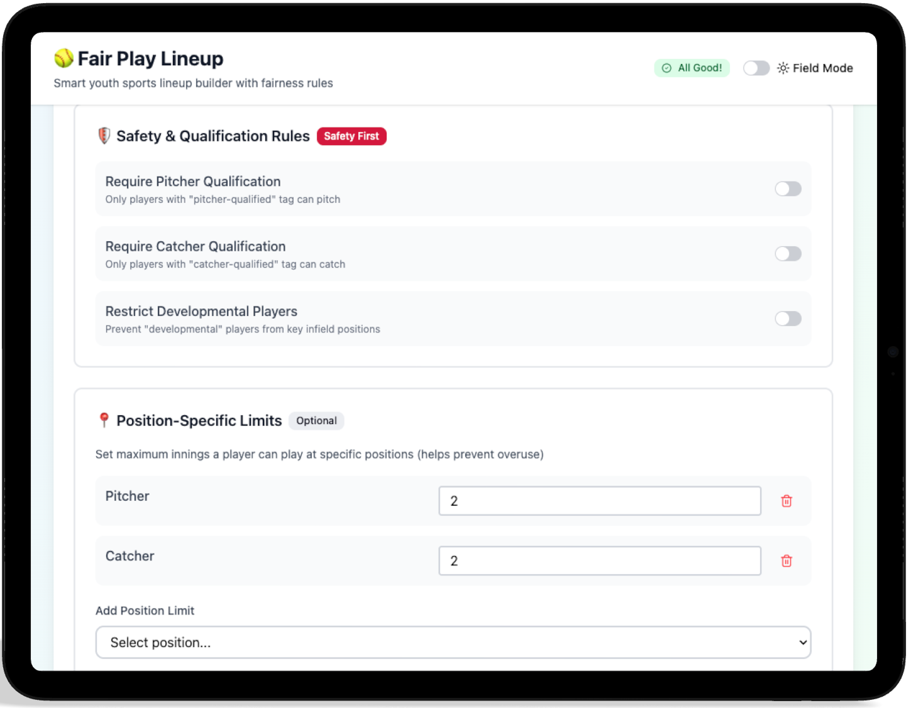
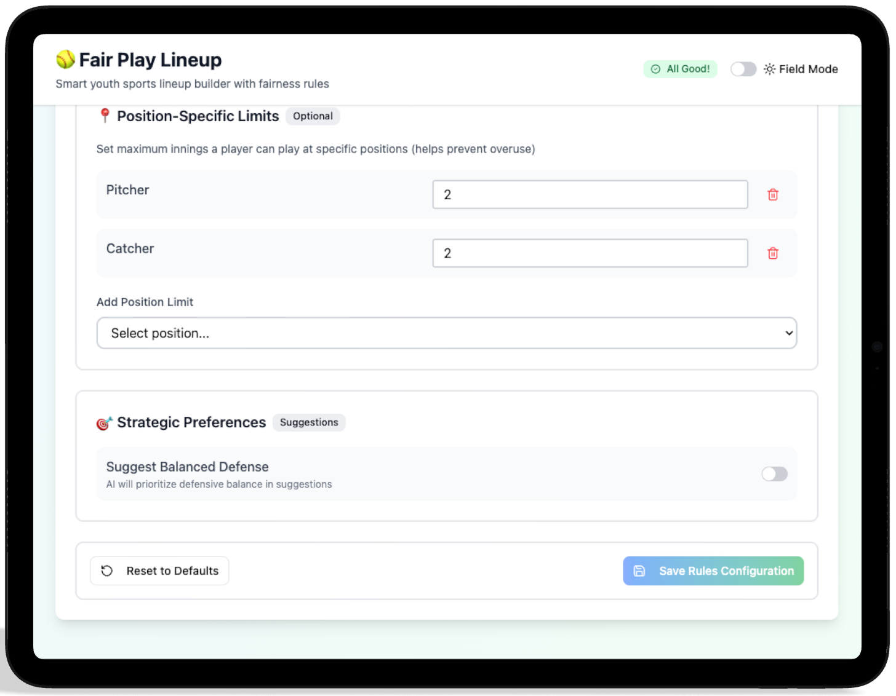
The Logic Prompt
I started with a blank canvas and focused on giving the AI system rules instead of worrying about how it looked. First, I gave it an initial prompt. Then, I kept adding, changing, or removing prompts until I got the result you see here.
• High-contrast outdoor legibility
• Customization
// Input to Figma Make
"Design a mobile interface where coaches can define their roster and then build a lineup for softball based off of their roster. Drag n drop placement as well as click interactions should be supported."
"We will have a customizable rules section that will be editable by coaches and used/checked when the lineups are built. Some rules to start with are: number of inning limit for position and bench, player must play minimum 2 inngins in the field, optional rule that only qualified players can be placed at pitcher and catcher positions, no player should sit on the bench for 2 consecutive innings."
"This will be used in bright sunlight, so we will need a high-contrast option the user can toggle on/off to increase visibility in these scenarios."
Managing the Lineup
Youth sports rosters often change quickly. I built the roster system so coaches can easily handle last-minute absences or changes, and have information about their players at their fingertips.
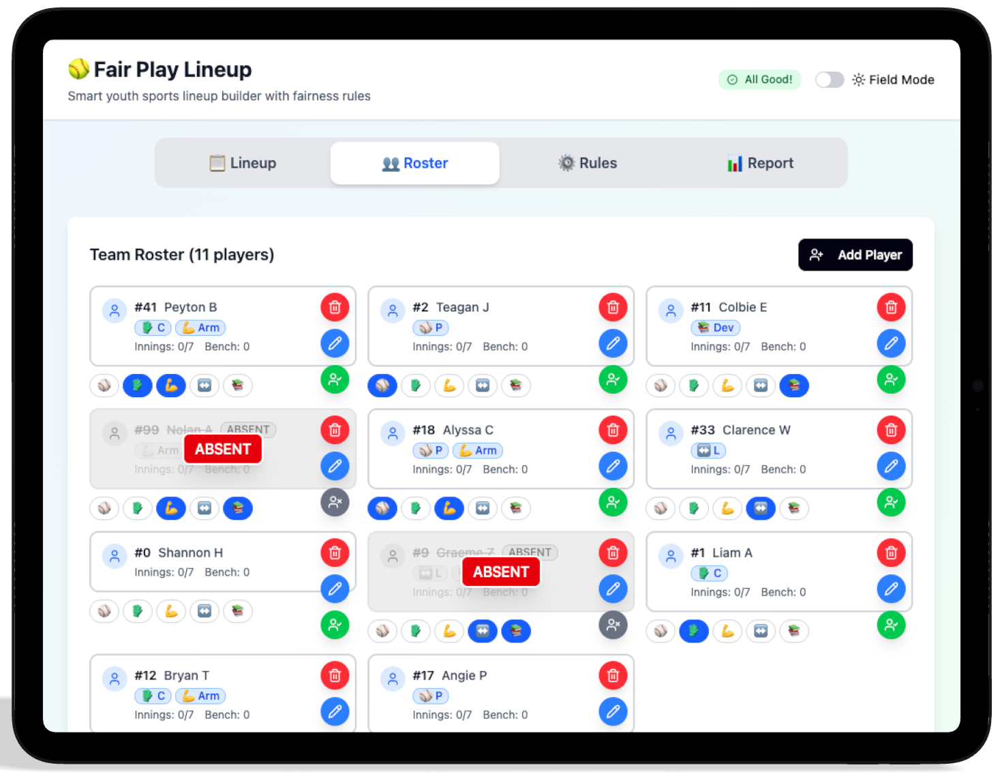
Marking a player as absent mid-game.
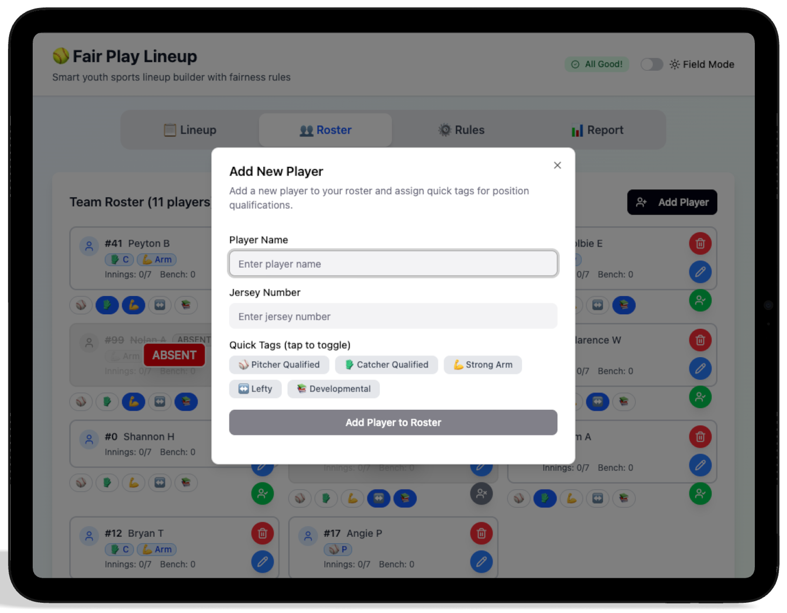
Adding a player to the roster.
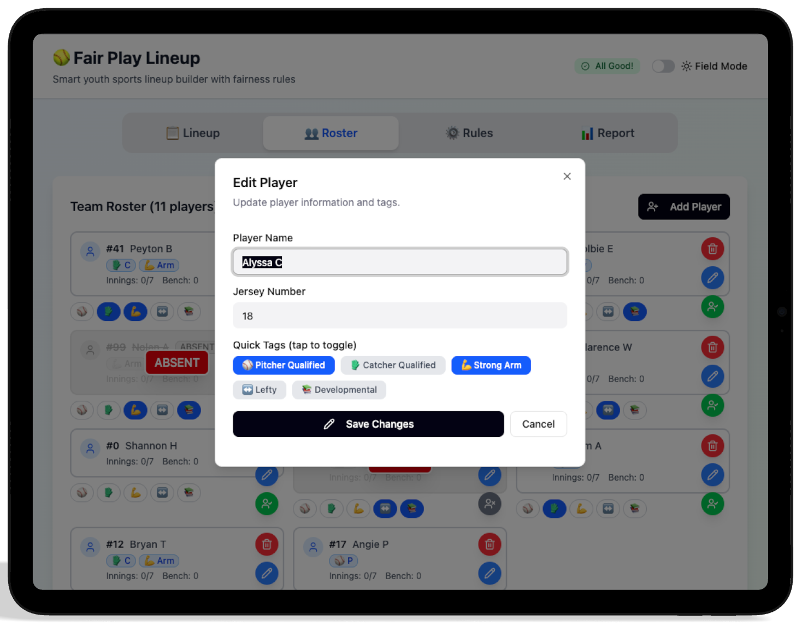
Editing a rostered player.
The Lineup
At a glance, the coach can see their players qualifications, who has strong arms and what positions they have currently been assigned to and for what inning.
Reducing Cognitive Load
Quick changes take place during the live game. I designed it with a drag-and-drop system and real-time feedback, so coaches can quickly make changes while still following league rules. During iteration, I also added a click-click workflow to limit the scrolling. However, I am still not happy with where this is currently and will continue iterating on the behavior and layout to ensure the best user experience.
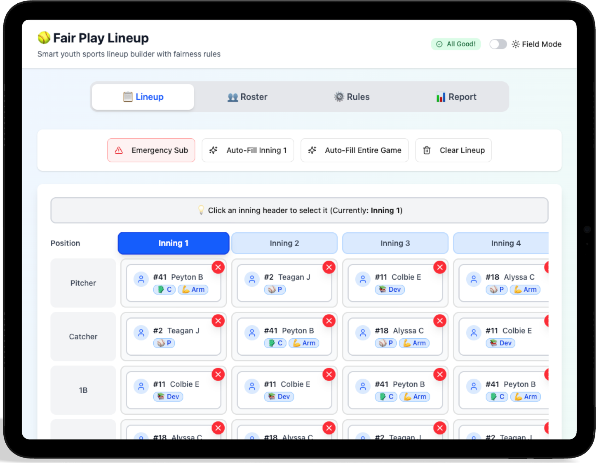
Intuitive drag-and-drop for position changes.
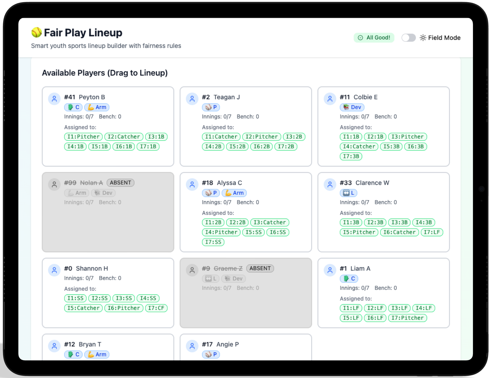
A look at the player cards and player designations.
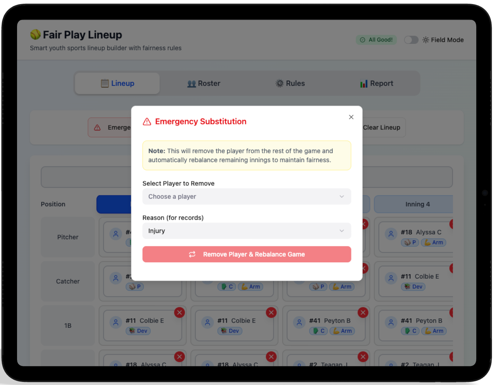
Handling emergency substitutions.
Designing for the Unknown
I built a system that can handle unexpected changes during a game. My goal was to help coaches adapt quickly to last-minute changes, without breaking the rules or creating unfair situations for players.
Closing the Loop
Post-game reports verify compliance and highlight player development. This transparency builds trust with parents and ensures the league's fair-play mission is actually being met.
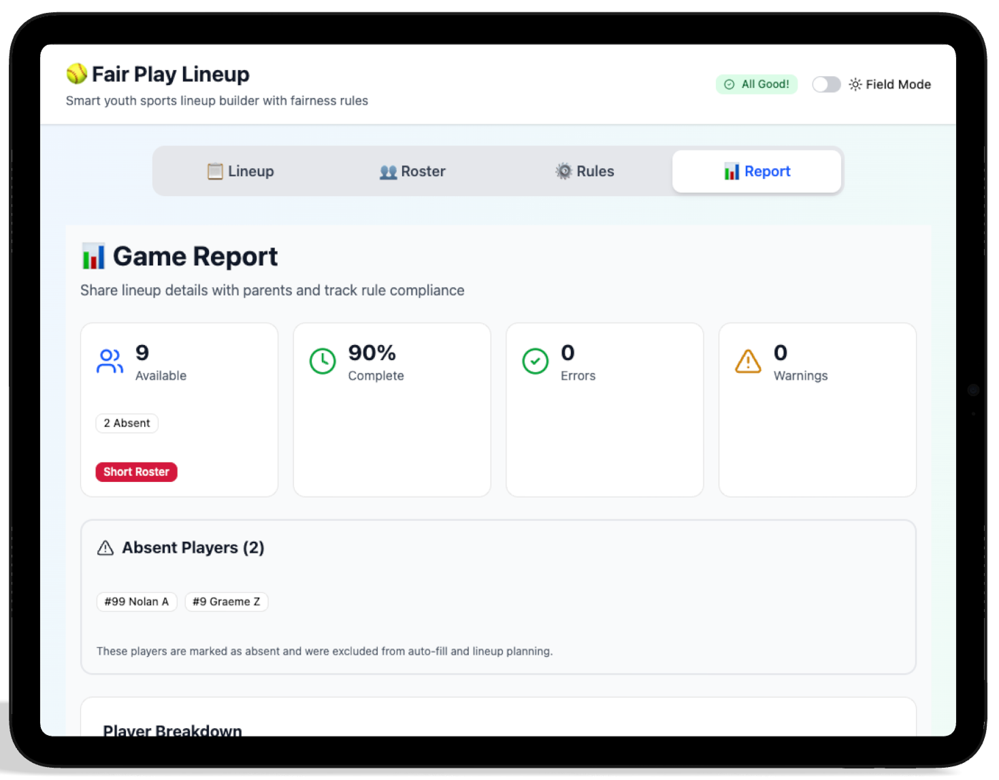
An overview of game compliance.
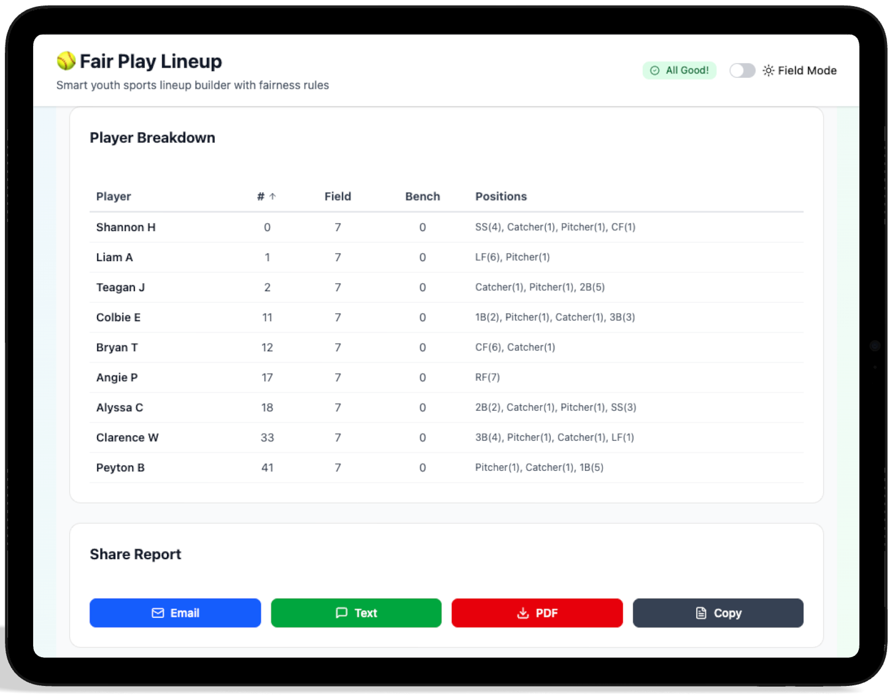
A look at where each player played and when, as well as report sharing options.
Building Accountability
By providing a data-backed record of every inning played, the app transforms a potentially emotional conversation with a parent into a factual one. It moves the coach from "guessing" to "knowing," fulfilling the primary goal of the Fair Play Engine.
Reflections & Roadmap
While the first iteration of Fair Play Lineup successfully handles the core logic of rotations, I have already identified several opportunities to deepen the product experience. My focus for the next version is to move from a standalone tool to a connected ecosystem.
The AI Advantage
By utilizing AI for the initial UI scaffolding, I was able to dedicate my time to the high-level logic and information architecture. This shifted the focus from "how does this button look" to "how does this engine think."
- → 40% faster prototyping speed
- → Immediate translation of logic to UI
- → Rapid exploration of high-contrast themes
Technical Hurdles
The biggest challenge was the 'Game-Time Pivot.' Designing a system that remains compliant while a coach is frantically removing players required a robust constraint-based architecture that feels invisible to the user.
What's Next?
Account Persistence
Developing a way for league officials to push pre-verified rosters and rules directly to a coach's account to reduce setup time.
AI Integration
Develop AI features to help coaches build lineups according to defensive and/or offensive performance metrics.
Offline Reliability
Ensuring the local database syncs flawlessly even in parks with zero cellular reception, a common pain point for Keith.
- → Season Support: Moving beyond single games to track player development, playing time, positions played, and attendance over an entire year.
- → Multi-Coach Sync: Enabling real-time updates so assistants and head coaches stay in perfect alignment.
- → Centralized Rules: Allowing leagues to set global fairness rules that teams automatically adopt.
- → Coaches Notes: A place for private observations on player development that can be toggled on or off during parent reporting.
- → League Integration: Automating the "paperwork" by syncing directly with league roster databases.
- → Performance Data: Integrating with scoring apps to help older age groups balance performance with fair play.